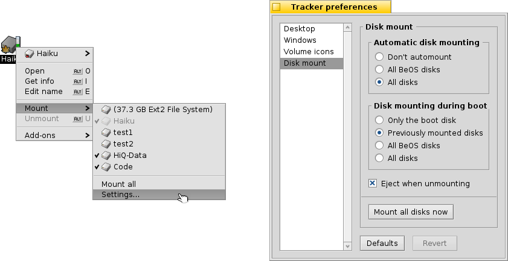

| İçindekiler |
|
Diskleri Bağlama Dolaşım Görünüm İzleyici tercihleri Dosyalarla çalışmak İşlem durumu |
İzleyici
İzleyici, dosyalarınız için kullanılan grafik arabirimdir. Yeni dosyalar oluşturmanıza veya var olanları bulmanıza, çalıştırmanıza, yeniden adlandırmanıza, kopyalamanıza veya silmenize olanak verir.
Diğerleri gibi bir uygulama olmasından ötürü (Masaüstü, özünde tam ekran çalışan bir pencereden ibarettir), İzleyici pencereleri ile Masaüstü Çubuğu'nda belirir ve isterseniz kendisinden çıkabilir veya onu yeniden başlatabilirsiniz. Çöken veya takılan bir İzleyici'den çıkıp yeniden başlatmanın en kolay yolu Takım Monitörü'nü çağırmaktır.
 Diskleri Bağlama
Diskleri Bağlama
Bir sabit disk, CD, USB Bellek vb. türü aygıtlara erişebilmek için onu önce bağlamalısınız, diğer bir deyişle sisteme onun orada olduğunu söylemelisiniz. Bu Masaüstü'nde veya daha önceden bağlanan bir diskin üzerinde (örn. önyükleme diski) sağ tıklayıp altmenüsünden bağlamak istediğiniz diski seçerek yapılır. Aynı menüsünü Masaüstü Çubuğu'nda da bulabilirsiniz.
Sistemi yeniden başlattığınızda aynı diskleri her seferinde yeniden bağlamaktan kurtulmak için bölümüne bakın.
Yukarıdaki ayarlar taktığınız her depolama aygıtını ve daha önceden bağlanmış tüm diskleri önyükleme sırasında kendiliğinden bağlamanıza olanak verir.
Dolaşım
Bir klasöre çift tıkladığınızda, öntanımlı olarak İzleyici tıkladığınız pencereyi olduğu gibi bırakıp yeni bir pencere açar. Bu kolaylıkla kalabalıklaşmış bir masaüstüne neden olabilir.
Bunu OPT düğmesini basılı tutarak önleyebilirsiniz; böylece üst pencere kendiliğinden kapanır.
Bu durum klavye dolaşımı için de geçerlidir. Ayrıntılı bilgi için Kısayol ve düğme kombinasyonları bölümüne bakın.
Klasörler arasında dolaşım, diğer platformlardaki dosya yöneticilerinde olduğu gibi İzleyici'nin ana ereklerinden biridir. Haiku İzleyici bunu kolay ve etkili bir biçimde yapabilmeniz için kendine özel birçok özellik barındırmaktadır.
Açılır altmenülerde dolaşım
Varacağınız yere sürekli çift tıklamaktansa aşağı düzeylere inmenin daha kolay bir yolu vardır:

Bir klasöre sağ tıklayın; bildiğiniz bağlam menüsünün en üstünde aşağı düzeylere bakabilmenizi sağlayan bir açılır menü bulacaksınız. Aradığınız klasöre veya konuma ulaşıncaya değin menüler içinde gezinmeyi sürdürün ve vardığınızda ögenin üzerine tıklayın. Üst görsel /boot/home/config/ klasörünün içeriğini göstermektedir.
Yukarıdaki işlemi bir dosyayı birlikte sürükleyerek yaparsanız dosya bıraktığınız konuma taşınacaktır.
Benzer bir yöntem ve uygulama tüm İzleyici pencerelerinden yapılabilir:

Sol aşağıda öge sayılarının belirtildiği alana tıklayın; o konumdan aşağı gidebileceğiniz tüm konumların listesini belirten altmenüleri göreceksiniz. Buradan istediğiniz konuma geçebilirsiniz.
Masaüstü'nün nice her zaman en üst düzeyde olduğuna dikkat edin; bu İzleyici'nin bağlı diskleri listelediği konum olduğundan dolayıdır. Başka bir diske geçmek isterseniz önce en üst düzeye (Masaüstü'ne) gelip oradan başka disklere geçmeniz gerekmektedir.
Aynı altmenü dolaşımını bir dosyayı bir klasörün üzerine getirdiğinizde de kullanılabilir. Biraz üzerinde tuttuğunuzda bir altmenü açılır ve gitmek istediğiniz konuma ulaşabilirsiniz. Sürüklemeyi sağ fare düğmesi ile başlattıysanız fareyi bırakacağınız zaman size kopyalama, taşıma ve bağlama seçeneklerinden birini seçebilirsiniz.
Hemen bulma ile dosyalara atlama
Bu konsepte başka işletim sistemlerinden aşina olabilirsiniz; bir dosyanın ilk birkaç harfini girmek eşleşen ilk dosyaya atlar. Haiku bu düşünceyi bir adım öteye taşıyor. Eğer bu harflerle başlayan bir dosya yoksa içinde girilen harflerin bulunduğu ilk dosya önünüze getirilir. Eğer bu harfler hiçbir dosyanın içinde yoksa dosya özniteliklerinde arama sürdürülür.

Yukarıdaki örnekte adında "Haiku logo" bulunan birçok dosyayı görüyorsunuz; dolayısıyla klasik bir arama mantığı burada işe yaramayacaktır. Ancak Haiku'da "web" yazdığınızda "Haiku-logo - website" örneği doğrudan seçilir. Girdiğiniz karakterler aşağıda normalde öge sayısını gördüğünüz bölümde görüntülenir. Bir karakter girdikten bir saniye sonra görünüm eski durumuna döner ve yeni bir arama yapabilirsiniz.
Hemen bulan süzme
Yazarken bir dosyaya atlamak yerine girdiğiniz karakterler ile eşleşmeyen dosyaları ekrandan kaldırmanızı sağlayan bir seçenek de bulunmaktadır. Bu, özellikle büyük klasörlerle çalışırken çok rahatlık sağlar. SHIFT SPACE düğme ikilisini kullanarak birden çok diziyi bile süzebilirsiniz.
Hemen bularak atlama yerine, süzme seçeneği siz ESC düğmesine basana veya pencereyi kapatana kadar (eğer Tek pencereli dolaşım kullanıyorsanız klasörden ayrılana kadar) silinmez.
Bu süzme seçeneğini İzleyici tercihleri'nden ayarlayabilirsiniz.
Görünüm

İzleyici pencereleri menüsünden ayarlayabileceğiniz üç görüntüleme kipi sunar:
(ALT 1) - Büyük simgeler; boyutlarını alt menüden veya ALT +/- düğmeleri ile değiştirebilirsiniz.
(ALT 2) - Küçük simgeler.
(ALT 3) - Dosyalarınız ayrıntılı bir görünümü; buradan dosya özniteliklerini görüntüleyebilir veya gizleyebilirsiniz (Öznitelikler bölümüne bakın.)
menüsünde birkaç tane daha ek işlev bulunmaktadır:
(ALT Y) - Pencereyi ideal boyutuna getirir.
- Yalnızca Simge veya Ufak simge görünümünde kullanılabilir. Bu alt menüden dosyaları aşağıdaki özniteliklerine göre sıralayabilirsiniz:
, , , , , , ,
- Sıralamayı tersine çevirir
(ALT K) - Tüm simgeleri görünmez bir ızgaraya hizalar. SHIFT düğmesini basılı tutarsanız menü girdisi olur ve tüm simgeleri yukarıda seçili kritere göre sıralar.
(SHIFT ALT A) - Bir düzenli ifade kullanarak dosya(ları) seçer.
(ALT W) - Pencereyi kapatır. SHIFT düğmesini basılı tutarsanız menü girdisi olur ve tüm İzleyici pencerelerini kapatır.
(ALT Q) - Geçerli çalışma alanındaki tüm İzleyici pencerelerini kapatır. Ola ki İzleyici pencereleri arasında dolaşırken OPT düğmesine basmayı unutup her yanı İzleyici pencereleri ile doldurursanız bu özellik işinize yarayabilir.
Bazen tam bir (ALT K) yapmadan yalnızca birkaç simgeyi hizalamak isteyebilirsiniz. Bu durumda simgeyi seçip yeni yerine bırakmadan önce ALT düğmesine basılı tutun. Bu simgeleri görünmez ızgaraya hizalayacaktır.
Geriye kalan seçeneklerin gayet açık olduğunu farz ederek İzleyici tercihlerine geçelim.
İzleyici tercihleri
seçeneği ilk bakışta biraz karmaşık görünebilecek İzleyici tercihleri panelini açar. Hepsini denedikten sonra bir sorun kalmayacağını öngörüyoruz. Tüm ayarlar anında etkin olduğundan dolayı neyin değiştiğini hemen görebileceksiniz.
Pek açık olmayan diğer ayarlara şöyle bir bakalım:
- Bağlanan disklerin Masaüstü'nde ayrı simgelerle mi gösterileceğini, yoksa tek bir Diskler simgesinden mi erişilebileceğini ayarlayın.
- kullanarak dizinler arasında yalnızca tek bir pencere kullanarak dolaşabilirsiniz; böylece bir klasöre çift tıkladığınızda yeni bir pencere açılmaz, içerik üst ögesinin yerini alarak ekranda görüntülenir. Bu OPT düğmesini basılı tutarak açma ile aynı şey değildir, çünkü bu seçenekte pencerenin konumu ve boyutu aynı kalmaz.

Sadece önceden aşinalığınız var diye İzleyici'yi kipine geçirmeden önce menü tabanlı dolaşım kipini biraz daha denemenizi öneririz; bu biçimde alıştıktan sonra istediğiniz yere daha hızlı gidebilir ve işinizi daha tez halledebilirsiniz. Diğer yanda, tek pencereli dolaşım kipinde Adres çubuğu'nu kullanarak gitmek istediğiniz konumu girebilir ve ileri/geri/yukarı düğmeleri ile dolaşabilirsiniz.
seçeneği İzleyici penceresinin içeriğini girdiğiniz karakterlere göre süzer ve ekranda sırasıyla ad, içerik ve özniteliklere göre sonuçlar gösterir. Ek bilgi için yukarıya bakın.
- Bir disk simgesinin yanında gösterilen boş alan belirtecinin renklerini ayarlayın.
- Hangi disklerin ne zaman kendiliğinden bağlanacağını belirleyin (ek bilgi için: "Diskleri bağlama").
Bu panele aynı zamanda Masaüstü Çubuğu'nun → İzleyici bölümünden de ulaşılabilir.
Dosyalarla çalışmak
Seçili bir dosya ile çalışırken menüsünün içeriğinin çoğuna o dosyaya sağ tıklayarak da ulaşabilirsiniz.
Komutlar genelde gayet açıktır.
- Bir dosyayı veya klasörü bulun. Ek bilgi için Sorgular bölümüne bakın.
- Bir klasör veya bir şablonu temel alan yeni bir dosya oluşturun.

seçeneği /boot/home/config/settings/Tracker/Yeni İzleyici şablonları klasörünü açar. Bu klasörde yeni bir dosya oluşturmak, menüsünde oluşturulan dosyanın öznitelikleri ve türüne iye yeni bir şablon girdisi ekler. Burada "Metin" adında ve text/plain türünde bir şablon görüyorsunuz. Ek bilgi için Dosya Türleri bölümüne bakın.
- Bu dosya türünü açabilen tüm uygulamaların listelendiği bir alt menü.

Çift tıklandığı zaman bu dosyayı açacak olan uygulamanın yanında bir onay imi bulunmaktadır. Bu alt menü bu dosya türünü açabilecek olan uygulamaları ilk olarak listeler; bu örnekte bu bir metin dosyasıdır, türü text/plain. Daha sonra bu genel türü açabilecek olan uygulamalar gelir, bu örnekte text/*. Listenin sonunda ise her tür dosyayı açabilecek olan uygulamalar yer alır. Bu listeden bir uygulama seçmez de menü girdisinin üzerine tıklarsanız bir panel açılır:

Burada daha önce listede gördüğünüz uygulamaları listeleyen bir pencere açılır. Uygulamalardan birine tıklayıp düğmesine basarsanız bu dosya türünün (text/plain) açılmasını her zaman açılmasını istediğiniz uygulamayı belirlemiş olursunuz.
-
Bu seçenek dosya üst bilgilerini ve izinlerini düzenleyebileceğiniz bir panel açar. Üst kısımdaki dosya adına tıklayarak dosya adını değiştirebilirsiniz.

Panel üç sekmeden oluşur:
- : Dosya boyutu, oluşturulma/değiştirilme tarihi, dosya türü ve konumu gibi standart bilgiyi gösterir. Konum satırındaki yola tıklayarak dosyanın üst konumunu açabilirsiniz. menüsü bu dosyayı açmak için kullanacağınız uygulamayı belirler.
- : Dosya izinlerini, grubu ve dosya sahibini değiştirmenize izin verir.
- : Tüm ek dosya özniteliklerini değerleri ve türleri ile birlikte listeler.
, ve - dosyaları yeniden adlandırmanıza, çoğaltmanıza ve seçili dosyaları çöpe atmanıza olanak verir.
, ve - seçili dosyaları altmenü dolaşımını kullanarak taşımanıza, kopyalamanıza ve bağlantı oluşturmanıza izin verir. SHIFT düğmesini basılı tutarsanız göreceli bağlantı oluşturmak için bir seçenek de çıkar.
, ve - dosyaları pano kullanarak kesmenize, kopyalamanıza ve yapıştırmanıza izin verir. SHIFTdüğmesini basılı tutarsanız while invoking the menu you can seçeneği ortaya çıkar, bununla daha sonra tamamlamak üzere örneğin başka bir klasörden işlem yapabilirsiniz. Ayrıca SHIFT düğmesi ile kopyalanan dosyaları panoya bağlantılar olarak yapıştırabilirsiniz.
- eğer daha önce dosya türü tanımlanmamışsa koklar ve dosya türünü ayarlar. Bu, örneğin wget gibi dosya türünü ayarlamayan bir uygulamayla dosya indirdiyseniz yararlı olabilir. SHIFT düğmesini basılı tutarsanız öge olarak değişir ve örneğin daha önceden yanlış bir tür belirlenmişse bunu düzeltir.
- seçili dosya ile işlem yapabilecek tüm standart İzleyici eklentisini gösterir. Ek bilgi için İzleyici Eklentileri bölümüne bakın.
İşlem durumu
Dosyaları kopyaladığınız, taşıdığınız veya sildiğiniz zaman, İzleyici işlemin durumunu bir durum penceresinde gösterir. Eğer birden çok işlem başlatırsanız her iş ayrı ilerleme çubuğu ile gösterilir.

Sağ tarafta bir işlemi duraklatmak veya durdurmak için iki düğme bulunur. Bazı durumlarda büyük bir işlemi duraklatmak yararlı olabilir. Örneğin büyük boyutlu bir uygulamayı hemen başlatmanız gerekebilir. Çok fazla veri kopyalamak sabit diskinizin girdi ve çıktı kanallarını doldurur ve bilgisayarınız yavaş davranabilir.